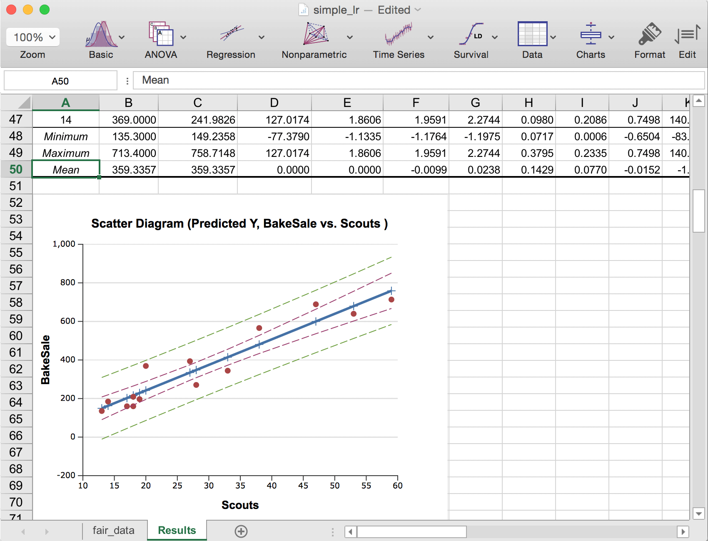
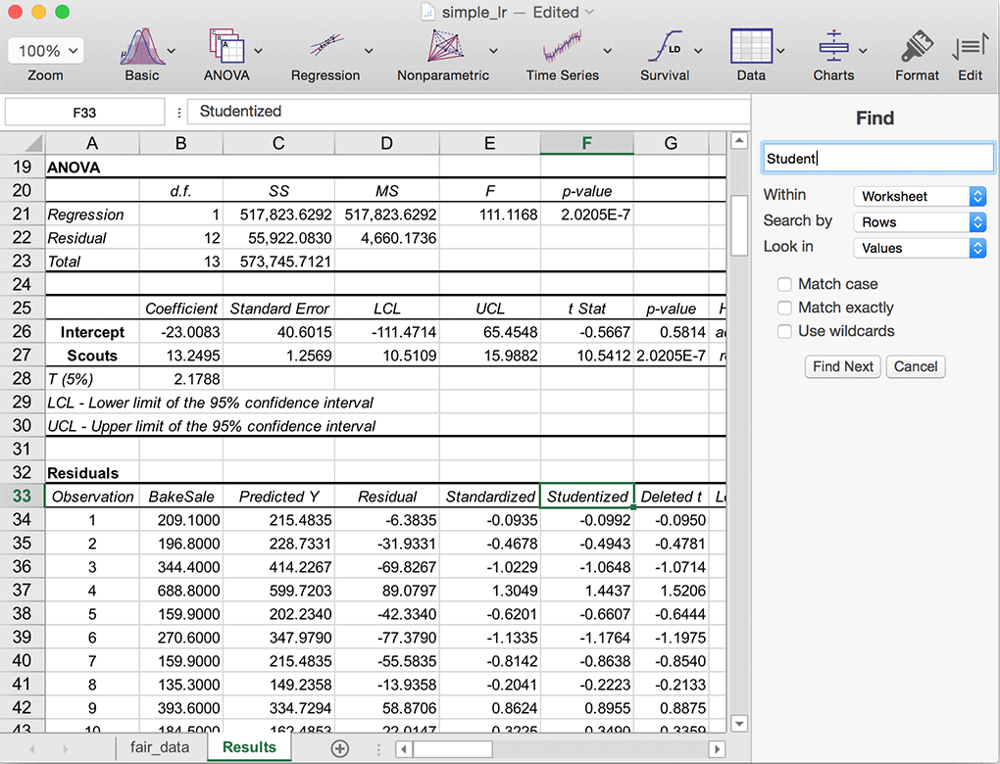
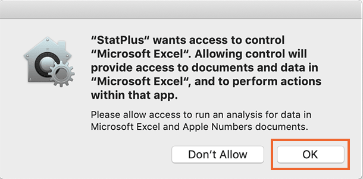

class: inverse layout: true --- ##What's New <br/> * <a href="#2">*Finally, new data analysis features*</a> in our first work-from-home build. * We've squashed a bunch of export bugs. <a href="mailto:support@analystsoft.com?Subject=Export%20Issues">Let us know</a> if you encounter any new. * Note to Excel users: We are working on improving Excel integration. If you see some issue, <a href="mailto:support@analystsoft.com?Subject=Excel%20Issues"> say something to us</a>. * Note to educators: Please <a href="mailto:support@analystsoft.com?Subject=StatPlus%20Classroom">share your thoughts</a> if you would like to see classroom specific features. * We have rolled out v2 of StatPlus online (includes all the iPad version features).<br><a href="mailto:support@analystsoft.com?Subject=StatPlus%20Online">Request an access</a>. * If you have missed what was new for the v7.0/7.1, this information is available on slides #4-6. * macOS 10.14/10.15 users - please see <a href="#7">this slide.</a> <hr> <i class="fa fa-commenting-o" aria-hidden="true"></i> To share your feedback on features or issues without an e-mail client - please use the `Help->Provide Feedback` command, or <a href="http://www.analystsoft.com/en/contact/">click here</a>. <hr> <br/> >Click or press the right-arrow key to discover new features. <br>Press the left-arrow key or click the right mouse button to return to previous slides. --- .left-column[ ## Analysis ### Improvements #### v7.3 ] .right-column[ * Box-Cox Transformation. * K-Means Clustering (beta version also includes hierarchical clustering). * Cross-Tabulation, 2x2 and NxK Contingency Tables Analysis commands include additional statistics (weighted Kappa and others), charts and extra options (row/columns ordering, handling non-integer values). * Exponential Smoothing command includes models with a trend (linear aka Holt, exponential and damped). * ANOVA report includes p-values for the homogeneity of variances tests and improved means plot. * Two-sample t-test (paired) includes profiles plot. * Descriptive Statistics includes a new report layout (`wide`) and an option to sort variables by names or mean values. * Report improvements for the following commands: Factor Analysis, Principal Component Analysis, Discriminant Function Analysis, Frequency Tables (Categorical), Correlations (Pearson), and Moving Average. * We are going to continue under-the-hood changes. *Please let us know what features are you missing and get an access to insider builds:* <!-- and get an access to the Pro version.--> <br>Use the `Help->Provide Feedback` command or <a href="http://www.analystsoft.com/en/contact/">click here</a>. ] --- .left-column[ ## Analysis ### Improvements #### v7 ] .right-column[ * Scatter plot command allows to plot ellipses for multiple confidence intervals (simply enter `90, 95, 99` in the options). * Standartization allows to choose biased estimator of standard deviation. * Normality tests report includes confidence intervals and Q-Q plots (v6.9 added the Shapiro-Francia test). * Linear regression report includes two heteroscedasticity tests (more tests are available with separate command - `Heteroscedasticity Tests`) and a Q-Q plot for residuals. Also a new option allows to choose type of residuals to plot. * Kaplan-Meier report includes Gehan-Breslow-Wilcoxon and Tarone-Ware tests in addition to Logrank test. * Minor report improvements for Life Tables and Compare ROC Curves commands. * Scatterplot allows to produce combined plot by groups. * Unit root test command produces more precise MacKinnon p-values. ] --- .left-column[ ## Spreadsheet ### Improvements: #### Charts ] .right-column[ ### * Starting v7.0 the built-in spreadsheet allows to tweak charts (change the title of a chart, edit axes, change colors). *<a href="https://www.analystsoft.com/en/contact/">Please let us know</a> what features are you missing in the charts edit panel.* <br>How-to: * Select a chart. * Click the `Format` toolbar button (displays a histogram when a chart is selected). * The `Chart Edit` panel will appear.<br><br> <p></p> ] --- .left-column[ ## Recent ### Improvements: #### Find text ] .right-column[ ### * Use the Find command to search for something in your workbook, such as a particular number or text string. To display the find panel select `Find` from the `Edit` menu or press `Cmd+F`.<br><br> <p></p> ] --- .left-column[ ## Recent ### Improvements #### ] .right-column[ * Options are grouped into categories according to their usage in the Advanced Options panel. * Select variables from the columns list with double click. * Easily remove a variable/range by clicking on the token arrow – the same well-known way as in the Mail app. .row[ <img src="images-whatsnew/whatsnew_data_input_window_65.gif" width="520" height="507" alt="StatPlus 7 Data input window"> ] ] --- ## <i class="fa fa-exclamation-triangle" aria-hidden="true"></i> macOS 10.14 Mojave/10.15 Catalina <br/> macOS 10.14/10.15 include security and privacy features that affect every app communicating to another. To use Microsoft Excel or Apple Numbers as a data source you are required to allow access to data in Excel/Numbers workbooks that are currently open. StatPlus uses the permission to read data from a selected workbook and does not modify your data in any way. When you run an analysis for Excel or Numbers workbook for the first time you will see a system dialog that prompts you to grant access to an app. > *As of today there is no way for user to re-authorize the app through the System Preferences – you can revoke a permission at any time from the System Preferences, but you cannot grant permission if once selected `Don't Allow`. To use StatPlus with Microsoft Excel or Apple Numbers please be sure to click the `OK` button in the prompt. If you accidentally disabled access to Excel or Numbers data - please **contact us**.* .row[ <center> <p></p></center> ] > For StatPlus ribbon integration with Excel (when supported) you will be also given a prompt to grant access to the Finder app – the permission is required to copy the add-in file to the Microsoft Excel. --- # <i class="fa fa-thumbs-o-up" aria-hidden="true"></i> Thanks for watching! Do you have questions or suggestions? Please let us know! > <a href="https://www.analystsoft.com/en/contact/"> <i class="fa fa-envelope" style="width: 2rem;" aria-hidden="true"></i> Contact Us</a> > <a href="https://www.facebook.com/analystsoft"> <i class="fa fa-facebook-f" style="width: 2rem;" aria-hidden="true"></i> Facebook</a> > <a href="https://twitter.com/statplusio"> <i class="fa fa-twitter" style="width: 2rem;" aria-hidden="true"></i> Twitter</a>